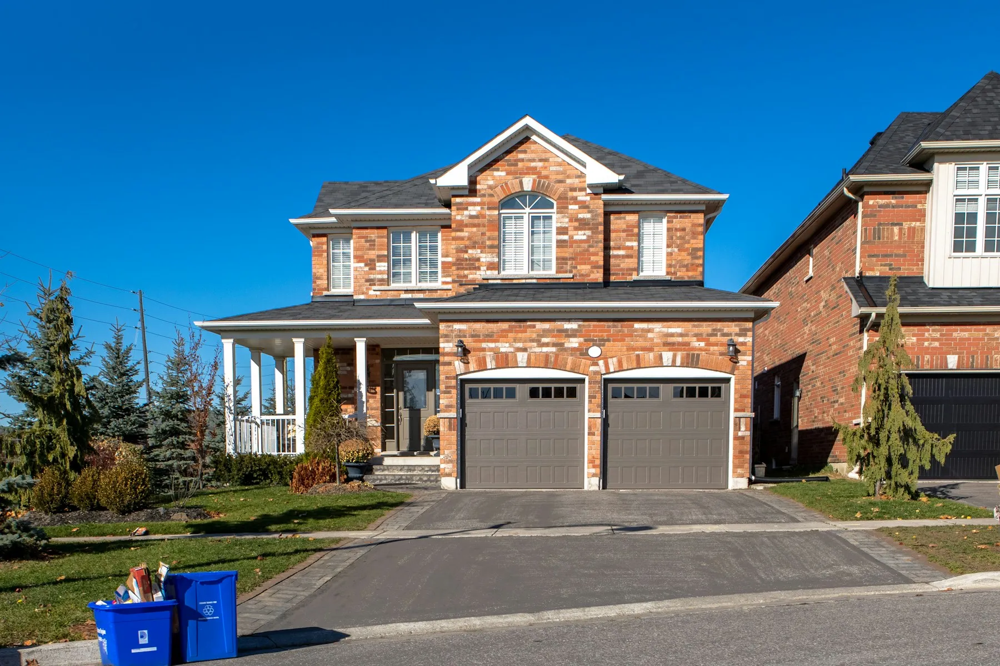
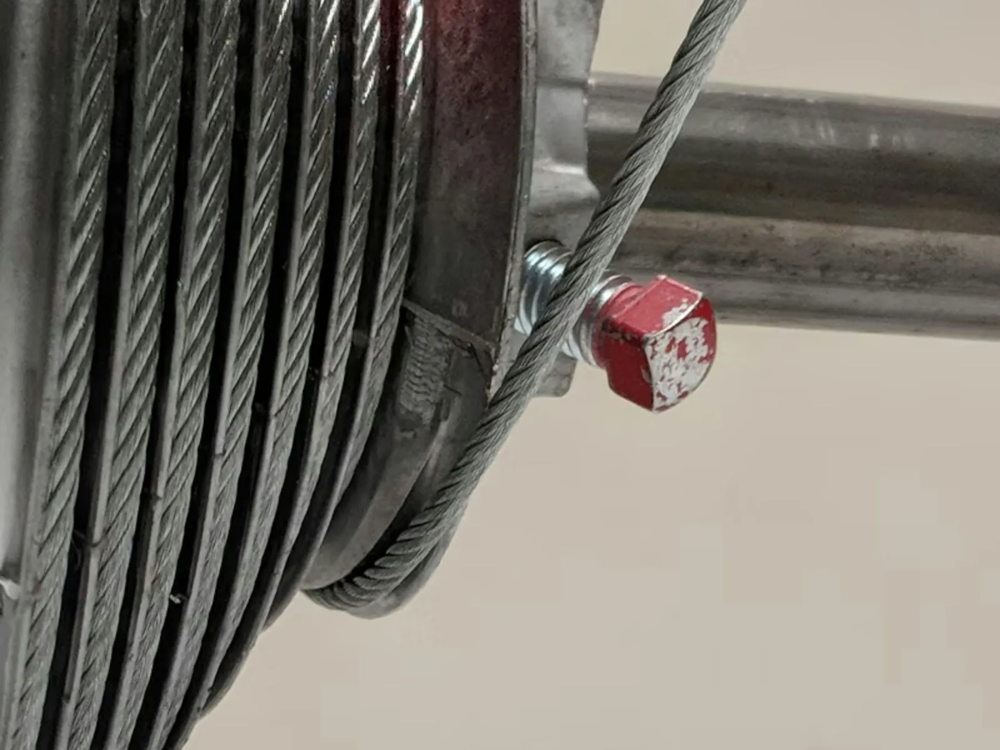

Garage door stuck? Get a Houston pro on the way today.
One call connects you with a vetted local garage door technician who covers your neighborhood. Springs, openers, cables, new doors. You get the price before any work starts.
- Free, no-obligation matching
- Same-day availability in most ZIPs
- Upfront price before work
- Independent, insured local techs
Every common garage door problem, one number.
Tell us the symptom. We send someone who handles exactly that, every day.
Emergency Garage Door Repair
Door stuck open or closed and you need it fixed today
Door stuck open, car trapped inside? Fast help, any day. Same dayBroken Spring Repair
Loud bang, door won't lift or feels extremely heavy
Torsion and extension springs replaced and balanced. Same dayOpener Repair
Motor hums, remote or keypad stopped working, door reverses
Motors, gears, logic boards and remotes brought back. Same dayOff-Track Door Repair
Door crooked, stuck half-open or rollers out of the track
Crooked or jammed doors realigned safely. Same dayCable Repair
A loose cable hanging by the door, or one side sitting low
Frayed or snapped lift cables replaced in pairs. Same daySafety Sensor Repair
Door opens but won't close, or reverses before the floor
Photo eyes realigned, rewired or replaced.Opener Installation
Old, loud or unreliable opener you want replaced
Quiet belt-drive and smart Wi-Fi openers installed.Noisy Door & Roller Repair
Grinding, squealing or rattling every time it moves
Worn rollers, hinges and bearings swapped for quiet ones.Panel Replacement
A dented or cracked section after a bump or a storm
Damaged sections replaced without a whole new door.New Garage Door Installation
Dented, outdated or storm-damaged door you want replaced
Insulated steel, wood-look and modern glass doors.Weather Seal Replacement
Daylight, water or bugs getting in under the door
Keeps out water, heat, pests and Gulf humidity.Commercial Door Repair
A roll-up or dock door at your business that's stuck or damaged
Roll-up, sectional and loading-dock doors for businesses. Same dayFrom "it won't open" to fixed, without the runaround.
- 01
Tell us what happened
Call, text or send the short form. Give us your ZIP and what the door is doing. Takes under a minute.
- 02
We match an available pro
We check which vetted technicians cover your neighborhood and can come soonest, often the same day.
- 03
Price first, then the work
Your technician diagnoses the problem and confirms the price with you before any work begins.

Built for Houston garages
Houston is hard on garage doors. Months of 95°F heat bake opener motors and logic boards, the Gulf humidity rusts springs and cables faster than in drier cities, and slab-on-grade homes from Katy to Kingwood shift just enough to knock tracks out of alignment. Most of the calls we route between May and September are worn-out torsion springs and openers that quit in the heat.
Storm season matters too. If you live in a coastal area such as Galveston County or parts of Brazoria County, a replacement door generally needs a windstorm-rated design with Texas Department of Insurance (TDI) certification to stay compliant for windstorm insurance. The pros we work with in those areas can tell you which rating your address needs before you buy.
Covering Greater Houston
Technicians across 6+ cities and neighborhoods, so help is usually nearby.
Know before you call
Frequently asked questions
How fast can someone come out?
In most Greater Houston ZIP codes we can connect you with a technician the same day, often within a few hours. Evenings and weekends depend on availability in your area; we tell you the earliest window on the call.
Is there a fee to use your service?
No. Matching you with a technician is free for homeowners. You only pay the contractor for the work you approve.
Who actually does the work?
Independent, locally operating garage door contractors from our network. We vet them for experience, insurance and reliability, and we follow up after the job to make sure you were taken care of.
Can I open my garage door if the spring is broken?
We strongly advise against it. With a broken spring the door can weigh 150+ pounds and may slam shut. Pull your car out only if the door is already open, and keep everyone clear until a technician arrives.
Need a garage door pro in Houston?
Tell us what happened and we will connect you with an available, vetted local technician. Free, fast, no obligation.